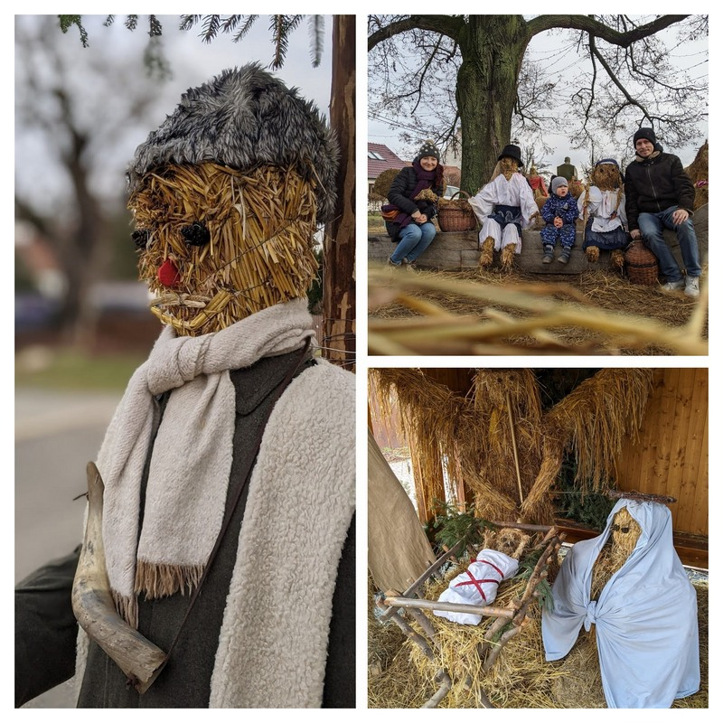
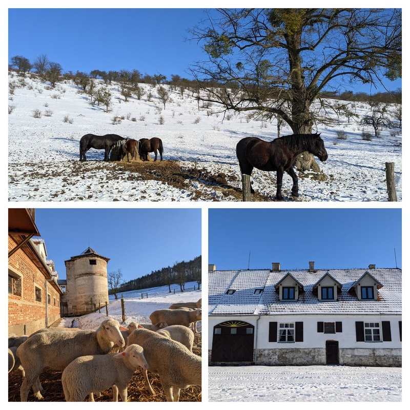
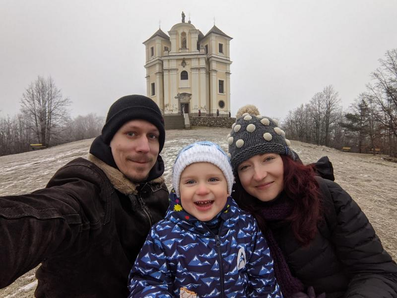
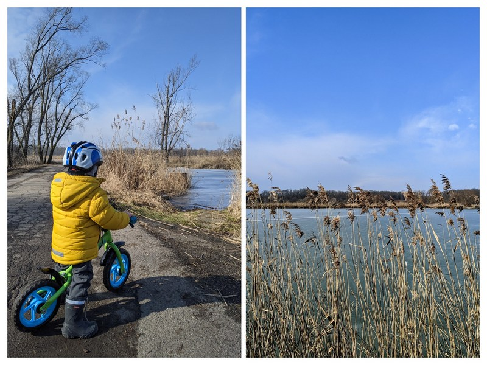

S lehkým zpožděním jdu dnes zavzpomínat na naše zimní toulací akce, které byly sice kvůli covidu poměrně omezené, ale i tak to stálo zato.
Slámový betlém v Pozořicích
Hledali jsme nějaké pěkné místo na rodinný výlet na Boží hod a nakonec jsme vyrazili podívat se na unikátní slámový betlém do nedalekých Pozořic. Pro divocha jako je O. je to rozhodně zajímavější varianta, než třeba jesličky v kostele - tady se mohl mezi všemi postavičkami proběhnout, osahat si je… Zdejší betlém čítá téměř šest desítek postav a nechybí tu jak klasické figury Josefa s Marií a Ježíškem či tří králů, tak i různá zvířátka. Za nás moc příjemný vánoční zážitek.

Ekofarma Jalový dvůr
Místo, které nás naprosto okouzlilo - jistě i díky tomu, že jsme si pro jeho návštěvu vybrali krásný slunečný den a nezapomněli s sebou v aktuální sněhové nadílce přibalit saně, na kterých se z kopců nad farmou luxusně sáňkovalo :-)! Na farmě, která se nachází nedaleko Slavkova, chovají spoustu zvířátek - koníky, ovečky, kozy, oslíky, lamu… Pro děti je to tu jako dělané a nechybí ani hřiště, odkud jsme O. málem nemohli dostat. Myslím, že sem se budeme pravidelně vracet - minimálně v zimě na tu sáňkovačku :-)!

Maková hora
Z Moravy si na chvíli odskočíme do středních Čech, kde jsme při vánoční návštěvě Příbrami jeli zkontrolovat Péťovu kešku na Makovou a doplnit nový logbook. Už to bylo třeba, protože naposledy jsme tu byli, když měl Oli teprve pár měsíců :-) Maková hora u Smolotel je působivým poutním místem s barokním chrámem sv. Jana Křtitele a Panny Marie Karmelské z 18. století. Kostel bývá otevřený jen při příležitostných bohoslužbách, ale tentokrát jsme měli štěstí a nahlédli jsme tak na chvíli i dovnitř.

Přírodní park Záhlinické rybníky
Tohle byl náš poslední výlet za hranice okresu 8-) Záhlinické rybníky jsou samozřejmě srdcovka, kam jsme se jako děti najezdily až až a nemohla jsem se dočkat, až se tu na kole poprvé projede taky Oli. Mezi rybníky vede zpevněná silnice a ač tu občas nějaké auto či cyklista projede, provoz je tu v neděli před obědem velmi mírný :-) Zároveň byly na konci února rybníky ještě zamrzlé, takže jsme se nemuseli moc bát, že O. někde sjede z cesty a žbluňkne do vody 8-)
